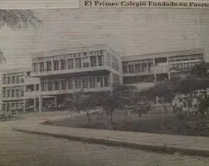

Fundación
El instituto "Franklin Delano Roosevelt", fue fundado en 1945, según acuerdo No.1030 del 26 de junio de este mismo año, surgió como un Centro Educativo de carácter privado. Para 1965 adquiere carácter semioficial al conseguir una subvención de Estado. Para 1980 el instituto por un común acuerdo, fue sostenido por la subvención del Estado, por una contraparte de la Empresa Nacional Portuaria, Refinería Texaco y por las Fuerzas Vivas del puerto. Ya para 1981 es el Estado quien asume la responsabilidad del pago de salario al personal de la institución; se constitución en un centro de carácter oficial, objetivo que fue logrado mediante una tenaz emprendida por el personal laborante, jóvenes estudiantes, padres de Familia y comunidad en general, este movimiento huelguístico en pro de la oficialización del instituto tuvo lugar en agosto de 1979.
Desde el año de su creación el instituto ha transitado por una senda de fructíferos resultados cualitativos, cambios que se aceleran y acrecentar, producto de una innovada visión administrativa y de compromiso de los Docentes en las tareas educativas.
Programas Académicos

Se inició con las modalidades para optar al título de Bachillerato en ciencias y letras, maestro de enseñanza primaria urbana, perito mercantil y contador público y secretaria comercial. Luego se fueron incrementando en la posibilidad de una mística de trabajo fundamentada en el que hacer Científico; bajo este panorama dinamizador se logra la apertura más secciones en el área de educación comercial. El Bachillerato Técnico en secretariado, Ciclo común, Bachillerato en Administración de empresas, técnico en Computación, Bachillerato técnico en estructuras Metálicas, la jornada Nocturna e ISEMED. Para el 2014 se da el marco de la reforma educativa la transformación en los bachilleratos técnicos profesionales aplicándose en informática por técnico en Computación, administración Hotelera por Técnico en Hostelería y Turismo, Construcciones Metálicas por Bachillerato Técnico en Estructuras Metálicas y Tercer Ciclo por Ciclo común; ya en el 2015 se transforma Bachillerato en Ciencias y Humanidades por Bachillerato en ciencias y letras, Bachillerato Técnico profesional en Administración de empresas por Bachillerato en Admón. de Empresa, Bachillerato Técnico en Contaduría y Finanzas por Educación Comercial.